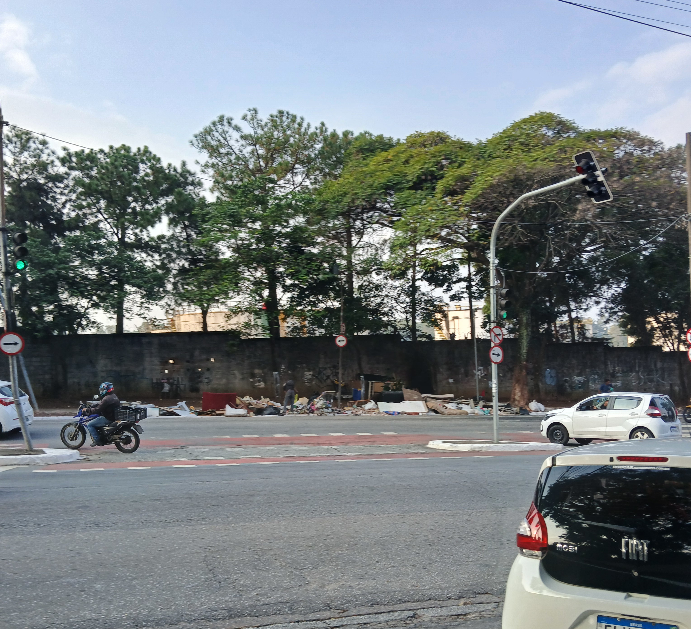
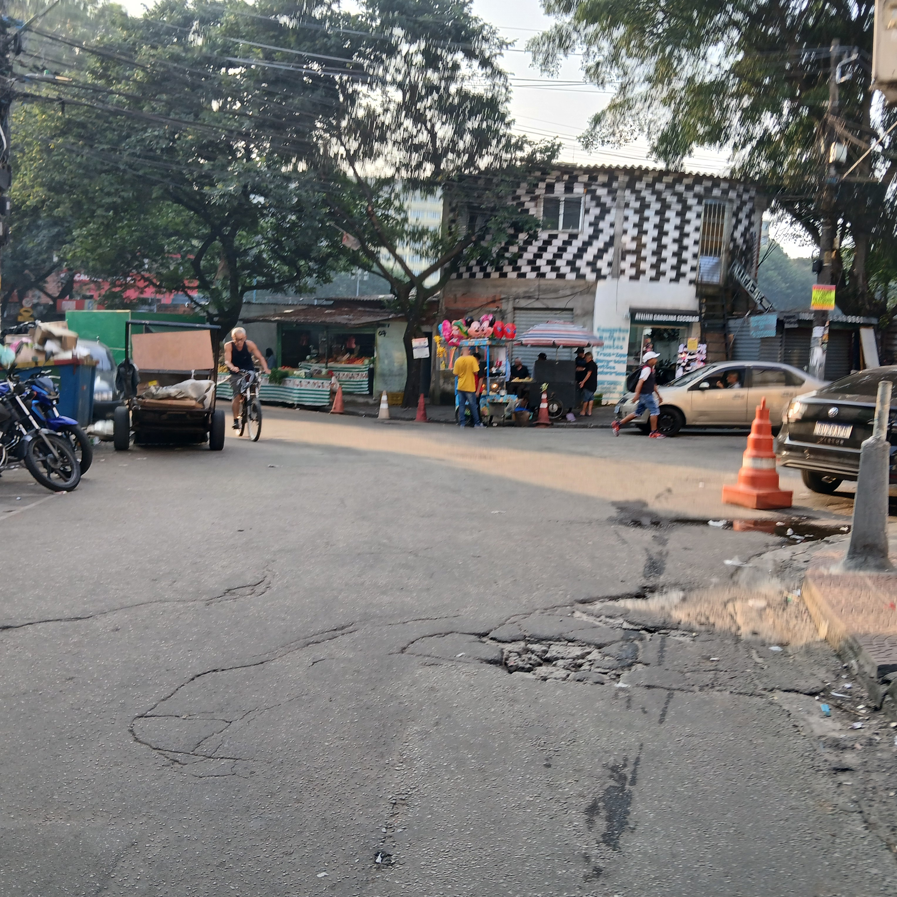

Projeto de extensão Cruzeiro do Sul
Análise e Desenvolvimento de Sistemas
2025 - 1º Semestre - Victor Vieira Farias
Introdução
Heliópolis, a maior comunidade de São Paulo, é marcada por sua intensa vida social, diversidade cultural e resistência popular.
No entanto, como muitas áreas densamente povoadas, enfrenta desafios significativos em relação ao meio ambiente. Problemas como o descarte inadequado de lixo, a falta de áreas verdes, a poluição e o acesso limitado a saneamento básico impactam diretamente a qualidade de vida dos moradores.
Apesar disso, iniciativas locais vêm mostrando que a consciência ambiental também cresce dentro da comunidade, com projetos de reciclagem, hortas urbanas e educação ambiental.
Este projeto busca refletir sobre a importância da preservação ambiental em Heliópolis e te mostrar boas práticas que podem fazer a diferença.
Sobre Heliópolis

Arena Heliópolis, um ponto esportivo da comunidade.
Heliópolis é uma comunidade localizada na zona sul da cidade de São Paulo, no distrito do Sacomã.
Com uma área de aproximadamente 1 milhão de metros quadrados, é a maior comunidade da cidade, e possui cerca de 200 mil habitantes.
A Comunidade possui uma variedade de atrações, variando desde a Orquestra Sinfônica Heliópolis até eventos informais em meio as ruas como o Baile do Helipa.
O problema ambiental em Heliópolis
A poluição não é um problema isolado a Heliópolis, mas é particularmente notório na comunidade devido a problemas de desigualdade
social e a falta de planejamento urbano. A comunidade sofre com problemas de saneamento básico e a falta de infraestrutura para descarte adequado
de resíduos. O descarte inadequado de resíduos muitas vezes resulta nestes resíduos entopindo bueiros, e durante a chuva estes bueiros alagam,
levando mais lixo para mais locais e também sendo um rísco à saúde dos moradores.

A imagem acima, tirada na Avenida Delamare, mostra um dos pontos onde é comum se encontrar lixo depositado na calçada.
A comunidade em ação
UNAS Heliópolis
A Unas - União de Núcleos, Associações dos Moradores de Heliópolis e Região - é uma entidade sem fins lucrativos com o objetivo de garantir
a população o acesso a oportunidades e direitos. A Unas tem projetos nas mais diversas áreas, como educação, cultura, assistência social, esporte, saúde, trabalho, direitos das mulheres, juventude, população LGBTQIAP+, moradia e movimentos sociais.
A Unas já auxiliou a comunidade com foco no meio ambiente ao incentivar e atuar no desenvolvimento de hortas comunitárias e áreas verdes pela comunidade.
Verdejando Heliópolis - Oficina da Sustentabilidade
A Oficina da Sustentabilidade é uma iniciativa com o propósito de promover o desenvolvimento sustentavel. A comunidade de Heliópolis participou da Virada Sustentavel, realizando ações como
plantio de árvores e recuperação de áreas da comunidade.
O que os moradores estão dizendo

Foto de um ponto comercial do bairro, onde comerciantes vendem seus produtos.
Neste projeto foi feita uma pesquisa pelos arredores da comunidade. A pesquisa tinha como propósito
entender melhor o ponto de vista dos moradores em relação ao bairro em si, o meio ambiente e sua satisfação
com as ações sendo realizadas na comunidade.
A pesquisa dividia entre homens e mulheres, e em idades, sendo idades inferiores ou iguais a 25, e idades superiores a 25 anos.
As perguntas feitas aos moradores foram as seguintes:
- Você já observou ações de preservação sendo feita na comunidade?
- Você acha que existe uma quantidade satisfatoria de áreas verdes na comunidade?
- Você separa o lixo para reciclagem?
- Você ja participou de atividades ou projetos de preservação ambiental?
- Você acha que a população do bairro está bem informada sobre questões ambientais?
- Você acha que a prefeitura dá a devida atenção à comunidade?
- Você percebeu diferenças na qualidade do ar ou da água nos últimos anos?
A pesquisa conseguiu obter as seguintes respostas:
- Dos moradores entrevistados, 50% responderam que já viram ações de preservação sendo realizadas na comunidade.
A maioria destes tinham idades inferiores a 25 anos, indicando que ações estão sendo feitas com mais frequência recentemente.
- 21.43% acham que existe uma quantidade satisfatoria de áreas verdes no bairro.
- Apenas 35.71% disseram separar o lixo para reciclagem em casa.
- Dos entrevistados, apenas uma mulher, 7.14%, respondeu ter participado de atividades ou projetos de preservação.
- Apenas 21.43% acreditam que a população esteja bem informada sobre questões ambientais.
- 21.43% acham que a prefeitura dá a devida atenção a comunidade.
- 57.14% disseram ter notado diferenças na qualidade do ar ou da água nos ultimos anos.
O que você pode fazer
Esta parte visa trazer algumas dicas de como você pode contribuir para a preservação do meio ambiente.
Economize água e energia
Feche a torneira enquanto estiver lavando as mãos ou escovando os dentes. Reutilize água da máquina de lavar para limpar áreas externas.
Substitua lampadas incandescentes por LED. Desligue aparelhos eletrônicos quando não estiverem sendo utilizados.
Reduza o seu consumo
Evite consumir mais do que você precisa. Opte por alternativas reciclaveis e itens duráveis.
Reduza o uso de plástico
Opte por produtos biodegradaveis, como garrafas de vidro ou inox, evite canudos e talheres de plásticos e opte por
alternativas reutilizaveis.
Participe de atividades de preservação
Seja voluntário em atividades de preservação. Busque na comunidade iniciativas que visam preservar a natureza e reduzir a poluição.
Separe o lixo para reciclagem
Separe o lixo entre o orgânico e reciclável, e os encaminhe para a coleta seletiva.
Plante árvores
Participe de iniciativas de reflorestamento, cultive jardins orgânicos ou até mesmo plante em casa.
Opte por alternativas sustentáveis
Opte por produtos que não testam em animais, que são ecológicos e que possuem certificados por práticas de sustentabilidade.
Conscientize sobre o meio ambiente
Compartilhe com amigos e familiares sobre as boas práticas de preservação ambiental, apoie empresas e projetos que
focam em preservar o meio ambiente.
Opte pelo transporte sustentavel
Opte pelo transporte público, bicicletas ou móveis elétricos. Estas ações já irão ajudar a reduzir a emissão de carbonos, contribuindo para um meio ambiente menos poluído.
Cuide do meio ambiente
Participe de atividades de limpeza de praias, parques e florestas.
Lembre-se que a Terra é única para nós. Se não a tivermos, não teremos para onde ir.
“Somos a primeira geração a sentir o impacto das mudanças climáticas e a última que pode fazer algo a respeito.”
Barack Obama